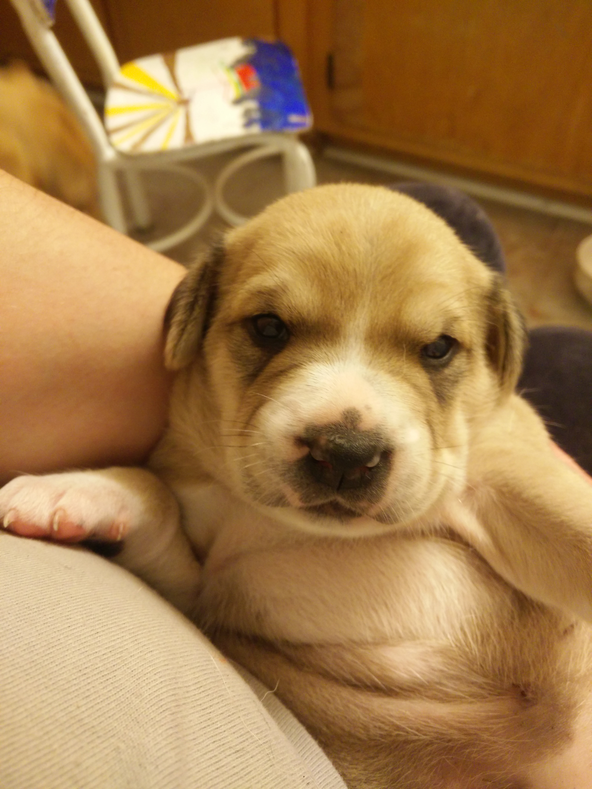

JavaScript Event onLoad
This example uses the onload feature through the addEventListener.
The page begins to load and as the browser scans it recognizes that it should load
the image last, or after everything has loaded.

Javascript Event touchstart
Touch the band name below for some Bio information. This uses the ontouchstart to load the data.
This example is for touch devices only. Unfortunatly you cannot test it on a computer.
RadioHead
Javascript Event onclick
Click the band name below for some Bio information.
This example is the same as above but using the onclick function rather than the ontouchstart function. Now you can see the bio info with a click on a computer.
RadioHead